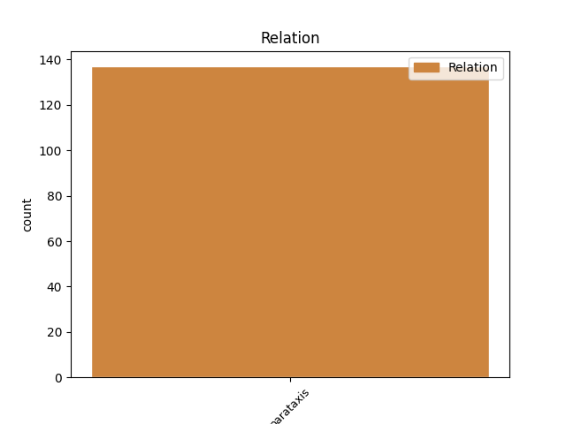
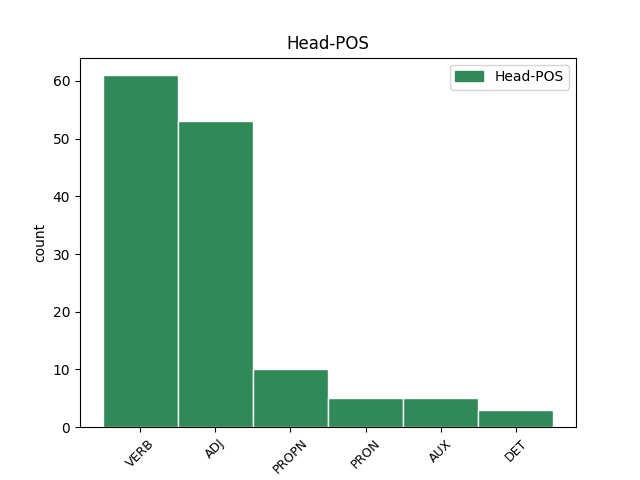
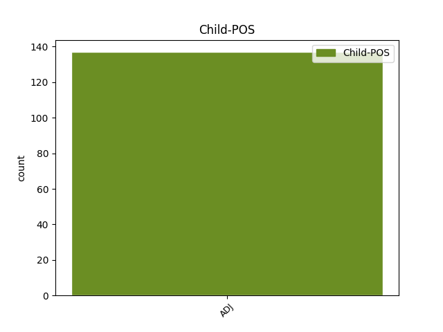

Distribution of features within this leaf



Agreement Rules sorted by frequency.
- When the dependent token is the parataxis(parataxis) of the head token, and the head token is ADJ and the dependent token is ADJ.
1 Это _ _ _ _ 0 _ _ _
2 была _ _ _ _ 0 _ _ _
3 трудная _ _ _ _ 0 _ _ _
4 любовь _ _ _ _ 0 _ _ _
5 , _ _ _ _ 0 _ _ _
6 но _ _ _ _ 0 _ _ _
7 была _ _ _ _ 0 _ _ _
8 и _ _ _ _ 0 _ _ _
9 другая другой ADJ _ Case=Nom|Degree=Pos|Gender=Fem|Number=Sing 0 _ _ _
10 - _ _ _ _ 0 _ _ _
11 нежная нежный ADJ _ Case=Nom|Degree=Pos|Gender=Fem|Number=Sing 9 parataxis _ SpaceAfter=No
12 , _ _ _ _ 0 _ _ _
13 легкая _ _ _ _ 0 _ _ _
14 , _ _ _ _ 0 _ _ _
15 радостная _ _ _ _ 0 _ _ _
16 . _ _ _ _ 0 _ _ _
1 Письмо _ _ _ _ 0 _ _ _
2 ему _ _ _ _ 0 _ _ _
3 понравилось понравиться VERB _ Aspect=Perf|Gender=Neut|Mood=Ind|Number=Sing|Tense=Past|VerbForm=Fin|Voice=Mid 0 _ _ _
4 : _ _ _ _ 0 _ _ _
5 гладкое гладкий ADJ _ Case=Nom|Degree=Pos|Gender=Neut|Number=Sing 3 parataxis _ SpaceAfter=No
6 , _ _ _ _ 0 _ _ _
7 тяжеленькое _ _ _ _ 0 _ _ _
8 , _ _ _ _ 0 _ _ _
9 и _ _ _ _ 0 _ _ _
10 марка _ _ _ _ 0 _ _ _
11 с _ _ _ _ 0 _ _ _
12 самолетом _ _ _ _ 0 _ _ _
13 . _ _ _ _ 0 _ _ _
1 Сотрудники _ _ _ _ 0 _ _ _
2 милиции _ _ _ _ 0 _ _ _
3 задержали _ _ _ _ 0 _ _ _
4 в _ _ _ _ 0 _ _ _
5 среду _ _ _ _ 0 _ _ _
6 утром _ _ _ _ 0 _ _ _
7 Абрама Абрам PROPN _ Animacy=Anim|Case=Acc|Gender=Masc|Number=Sing 0 _ _ _
8 Белякова _ _ _ _ 0 _ _ _
9 - _ _ _ _ 0 _ _ _
10 второго второй ADJ _ Animacy=Anim|Case=Acc|Degree=Pos|Gender=Masc|Number=Sing 7 parataxis _ _
11 из _ _ _ _ 0 _ _ _
12 трех _ _ _ _ 0 _ _ _
13 арестантов _ _ _ _ 0 _ _ _
14 , _ _ _ _ 0 _ _ _
15 бежавших _ _ _ _ 0 _ _ _
16 18 _ _ _ _ 0 _ _ _
17 февраля _ _ _ _ 0 _ _ _
18 из _ _ _ _ 0 _ _ _
19 изолятора _ _ _ _ 0 _ _ _
20 временного _ _ _ _ 0 _ _ _
21 содержания _ _ _ _ 0 _ _ _
22 ОВД _ _ _ _ 0 _ _ _
23 Волховского _ _ _ _ 0 _ _ _
24 района _ _ _ _ 0 _ _ _
25 Ленинградской _ _ _ _ 0 _ _ _
26 области _ _ _ _ 0 _ _ _
27 . _ _ _ _ 0 _ _ _
1 Отличие _ _ _ _ 0 _ _ _
2 от _ _ _ _ 0 _ _ _
3 советской _ _ _ _ 0 _ _ _
4 системы _ _ _ _ 0 _ _ _
5 в _ _ _ _ 0 _ _ _
6 том _ _ _ _ 0 _ _ _
7 , _ _ _ _ 0 _ _ _
8 что _ _ _ _ 0 _ _ _
9 тогда _ _ _ _ 0 _ _ _
10 был _ _ _ _ 0 _ _ _
11 Госплан _ _ _ _ 0 _ _ _
12 , _ _ _ _ 0 _ _ _
13 который _ _ _ _ 0 _ _ _
14 планировал _ _ _ _ 0 _ _ _
15 все все PRON _ Animacy=Inan|Case=Acc|Gender=Neut|Number=Sing 0 _ _ _
16 - _ _ _ _ 0 _ _ _
17 сколько _ _ _ _ 0 _ _ _
18 нужно нужный ADJ _ Degree=Pos|Gender=Neut|Number=Sing|Variant=Short 15 parataxis _ _
19 учителей _ _ _ _ 0 _ _ _
20 , _ _ _ _ 0 _ _ _
21 врачей _ _ _ _ 0 _ _ _
22 и _ _ _ _ 0 _ _ _
23 т. _ _ _ _ 0 _ _ _
24 п _ _ _ _ 0 _ _ _
25 . _ _ _ _ 0 _ _ _
1 Распространенной _ _ _ _ 0 _ _ _
2 практикой _ _ _ _ 0 _ _ _
3 было быть AUX _ Aspect=Imp|Gender=Neut|Mood=Ind|Number=Sing|Tense=Past|VerbForm=Fin|Voice=Act 0 _ _ _
4 использование _ _ _ _ 0 _ _ _
5 китайских _ _ _ _ 0 _ _ _
6 прозвищ _ _ _ _ 0 _ _ _
7 для _ _ _ _ 0 _ _ _
8 иностранцев _ _ _ _ 0 _ _ _
9 , _ _ _ _ 0 _ _ _
10 в _ _ _ _ 0 _ _ _
11 связи _ _ _ _ 0 _ _ _
12 с _ _ _ _ 0 _ _ _
13 чем _ _ _ _ 0 _ _ _
14 сложно сложный ADJ _ Degree=Pos|Gender=Neut|Number=Sing|Variant=Short 3 parataxis _ _
15 найти _ _ _ _ 0 _ _ _
16 упоминание _ _ _ _ 0 _ _ _
17 имени _ _ _ _ 0 _ _ _
18 Поло _ _ _ _ 0 _ _ _
19 в _ _ _ _ 0 _ _ _
20 других _ _ _ _ 0 _ _ _
21 китайских _ _ _ _ 0 _ _ _
22 источниках _ _ _ _ 0 _ _ _
23 . _ _ _ _ 0 _ _ _
1 Что-то _ _ _ _ 0 _ _ _
2 было _ _ _ _ 0 _ _ _
3 головокружительное _ _ _ _ 0 _ _ _
4 в _ _ _ _ 0 _ _ _
5 этой _ _ _ _ 0 _ _ _
6 ликвидации _ _ _ _ 0 _ _ _
7 логики _ _ _ _ 0 _ _ _
8 , _ _ _ _ 0 _ _ _
9 границы _ _ _ _ 0 _ _ _
10 здравого _ _ _ _ 0 _ _ _
11 смысла _ _ _ _ 0 _ _ _
12 не _ _ _ _ 0 _ _ _
13 существовало _ _ _ _ 0 _ _ _
14 ; _ _ _ _ 0 _ _ _
15 да _ _ _ _ 0 _ _ _
16 и _ _ _ _ 0 _ _ _
17 не _ _ _ _ 0 _ _ _
18 было _ _ _ _ 0 _ _ _
19 такого такой DET _ Case=Gen|Gender=Masc|Number=Sing 0 _ _ _
20 - _ _ _ _ 0 _ _ _
21 здравого здравый ADJ _ Case=Gen|Degree=Pos|Gender=Masc|Number=Sing 19 parataxis _ _
22 - _ _ _ _ 0 _ _ _
23 смысла _ _ _ _ 0 _ _ _
24 , _ _ _ _ 0 _ _ _
25 был _ _ _ _ 0 _ _ _
26 - _ _ _ _ 0 _ _ _
27 смысл _ _ _ _ 0 _ _ _
28 . _ _ _ _ 0 _ _ _
Disagree Examples:
1 А _ _ _ _ 0 _ _ _
2 я _ _ _ _ 0 _ _ _
3 уж _ _ _ _ 0 _ _ _
4 мечтал мечтать VERB _ Aspect=Imp|Gender=Masc|Mood=Ind|Number=Sing|Tense=Past|VerbForm=Fin|Voice=Act 0 _ _ _
5 связаться _ _ _ _ 0 _ _ _
6 с _ _ _ _ 0 _ _ _
7 партизанами _ _ _ _ 0 _ _ _
8 , _ _ _ _ 0 _ _ _
9 - _ _ _ _ 0 _ _ _
10 натура _ _ _ _ 0 _ _ _
11 у _ _ _ _ 0 _ _ _
12 меня _ _ _ _ 0 _ _ _
13 с _ _ _ _ 0 _ _ _
14 детства _ _ _ _ 0 _ _ _
15 партизанская партизанский ADJ _ Case=Nom|Degree=Pos|Gender=Fem|Number=Sing 4 parataxis _ SpaceAfter=No
16 . _ _ _ _ 0 _ _ _
1 На _ _ _ _ 0 _ _ _
2 Алтае _ _ _ _ 0 _ _ _
3 распространен распространенный ADJ _ Degree=Pos|Gender=Masc|Number=Sing|Variant=Short 0 _ _ _
4 монголоидный _ _ _ _ 0 _ _ _
5 тип _ _ _ _ 0 _ _ _
6 в _ _ _ _ 0 _ _ _
7 сочетании _ _ _ _ 0 _ _ _
8 с _ _ _ _ 0 _ _ _
9 заметной _ _ _ _ 0 _ _ _
10 растительностью _ _ _ _ 0 _ _ _
11 на _ _ _ _ 0 _ _ _
12 лице _ _ _ _ 0 _ _ _
13 , _ _ _ _ 0 _ _ _
14 что _ _ _ _ 0 _ _ _
15 не _ _ _ _ 0 _ _ _
16 характерно характерный ADJ _ Degree=Pos|Gender=Neut|Number=Sing|Variant=Short 3 parataxis _ _
17 для _ _ _ _ 0 _ _ _
18 чистых _ _ _ _ 0 _ _ _
19 монголоидов _ _ _ _ 0 _ _ _
20 - _ _ _ _ 0 _ _ _
21 вы _ _ _ _ 0 _ _ _
22 никогда _ _ _ _ 0 _ _ _
23 не _ _ _ _ 0 _ _ _
24 встретите _ _ _ _ 0 _ _ _
25 китайца _ _ _ _ 0 _ _ _
26 или _ _ _ _ 0 _ _ _
27 монгола _ _ _ _ 0 _ _ _
28 с _ _ _ _ 0 _ _ _
29 окладистой _ _ _ _ 0 _ _ _
30 бородой _ _ _ _ 0 _ _ _
31 или _ _ _ _ 0 _ _ _
32 пышными _ _ _ _ 0 _ _ _
33 усами _ _ _ _ 0 _ _ _
34 . _ _ _ _ 0 _ _ _
1 Как _ _ _ _ 0 _ _ _
2 ни _ _ _ _ 0 _ _ _
3 странно странный ADJ _ Degree=Pos|Gender=Neut|Number=Sing|Variant=Short 9 parataxis _ SpaceAfter=No
4 , _ _ _ _ 0 _ _ _
5 обычный _ _ _ _ 0 _ _ _
6 дешевый _ _ _ _ 0 _ _ _
7 конторский _ _ _ _ 0 _ _ _
8 стул _ _ _ _ 0 _ _ _
9 стал стать VERB _ Aspect=Perf|Gender=Masc|Mood=Ind|Number=Sing|Tense=Past|VerbForm=Fin|Voice=Mid 0 _ _ _
10 сегодня _ _ _ _ 0 _ _ _
11 одним _ _ _ _ 0 _ _ _
12 из _ _ _ _ 0 _ _ _
13 самых _ _ _ _ 0 _ _ _
14 рентабельных _ _ _ _ 0 _ _ _
15 товаров _ _ _ _ 0 _ _ _
16 офисного _ _ _ _ 0 _ _ _
17 ассортимента _ _ _ _ 0 _ _ _
18 . _ _ _ _ 0 _ _ _
1 Расплачиваться _ _ _ _ 0 _ _ _
2 там _ _ _ _ 0 _ _ _
3 " _ _ _ _ 0 _ _ _
4 пластиком _ _ _ _ 0 _ _ _
5 " _ _ _ _ 0 _ _ _
6 очень _ _ _ _ 0 _ _ _
7 рискованно рискованный ADJ _ Degree=Pos|Gender=Neut|Number=Sing|Variant=Short 0 _ _ _
8 : _ _ _ _ 0 _ _ _
9 велика большой ADJ _ Degree=Pos|Gender=Fem|Number=Sing|Variant=Short 7 parataxis _ _
10 вероятность _ _ _ _ 0 _ _ _
11 того _ _ _ _ 0 _ _ _
12 , _ _ _ _ 0 _ _ _
13 что _ _ _ _ 0 _ _ _
14 вашей _ _ _ _ 0 _ _ _
15 карточкой _ _ _ _ 0 _ _ _
16 тут _ _ _ _ 0 _ _ _
17 же _ _ _ _ 0 _ _ _
18 воспользуются _ _ _ _ 0 _ _ _
19 мошенники _ _ _ _ 0 _ _ _
20 . _ _ _ _ 0 _ _ _
1 Маятник _ _ _ _ 0 _ _ _
2 " _ _ _ _ 0 _ _ _
3 бесплатно _ _ _ _ 0 _ _ _
4 / _ _ _ _ 0 _ _ _
5 все _ _ _ _ 0 _ _ _
6 - _ _ _ _ 0 _ _ _
7 за _ _ _ _ 0 _ _ _
8 - _ _ _ _ 0 _ _ _
9 деньги _ _ _ _ 0 _ _ _
10 " _ _ _ _ 0 _ _ _
11 отклонился отклониться VERB _ Aspect=Perf|Gender=Masc|Mood=Ind|Number=Sing|Tense=Past|VerbForm=Fin|Voice=Mid 0 _ _ _
12 слишком _ _ _ _ 0 _ _ _
13 далеко _ _ _ _ 0 _ _ _
14 в _ _ _ _ 0 _ _ _
15 сторону _ _ _ _ 0 _ _ _
16 тотальной _ _ _ _ 0 _ _ _
17 тарификации _ _ _ _ 0 _ _ _
18 , _ _ _ _ 0 _ _ _
19 что _ _ _ _ 0 _ _ _
20 во _ _ _ _ 0 _ _ _
21 многих _ _ _ _ 0 _ _ _
22 случаях _ _ _ _ 0 _ _ _
23 совершенно _ _ _ _ 0 _ _ _
24 неоправданно неоправданный ADJ _ Degree=Pos|Gender=Neut|Number=Sing|Variant=Short 11 parataxis _ SpaceAfter=No
25 . _ _ _ _ 0 _ _ _